1.前言
一直想做一个自己的个人主页，记录自己的生活经历和学习心得，但苦于各种琐事和懒癌一拖再拖，直到最近本科的毕业相关事宜尘埃落地，才终于下定决心开始制作。经过相关的查阅后发现，Github有提供一个叫做Github Pages的服务，它为每一个用户免费提供一个主页的域名和项目仓库，利用该仓库还能免费托管你的静态网页。这样我们就能够同时省下购买域名和服务器维护等相关开销。 既然如此那么何乐不为呢。于是我选用了Github Pages来制作我的主页，同时也记录一下搭建的过程，希望能够帮到后来有缘看到这篇文章的你。
2.创建项目仓库
既然是Github提供的服务那么自然需要相应的账号，相信各位都已经有了因此就不再做赘述。进到个人主页中，点击右上角的“+”号然后选择“New repository”创建仓库。
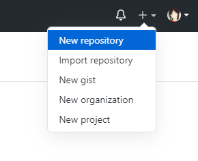
然后在出现的页面中分别填写：
Repository name：必填，且需要与自己的Github用户名保持一致，以避免后续主页可能出现的404问题；
Description：选填，仓库描述；
Public/Private：二选一，选择是否公开该项目仓库；
Initialize this repository with a README：选择是否为项目仓库创建说明文件，后续可自行添加。
然后点击“Create repository”即可创建好我们的托管仓库了。
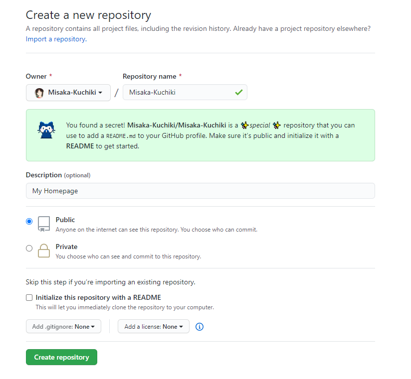
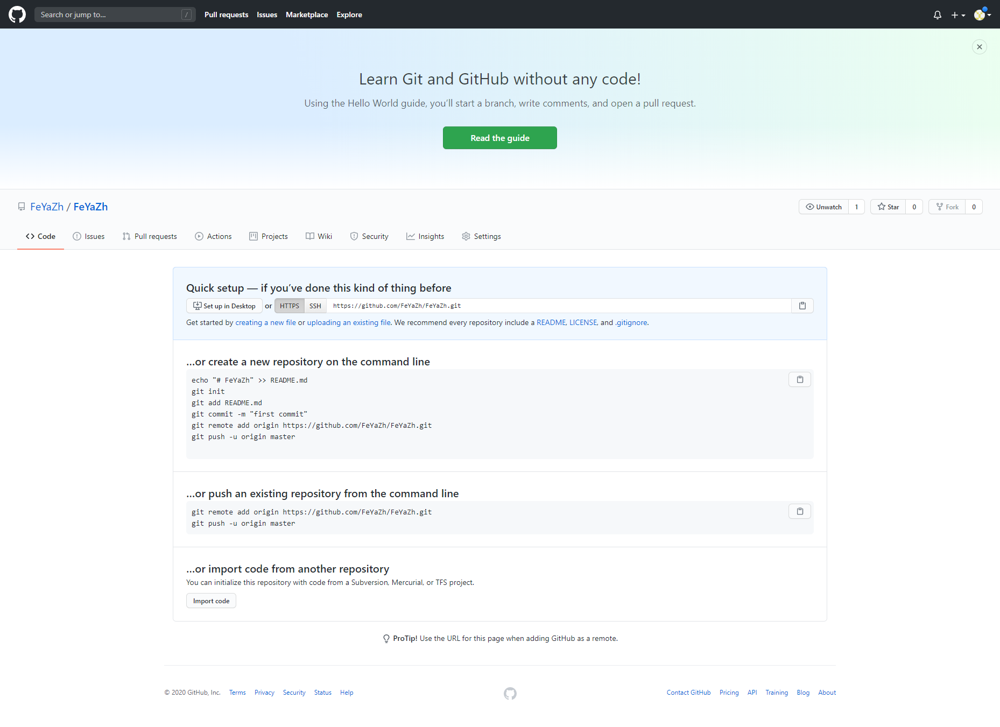
创建成功后的仓库页面。由于我的仓库已经提前创建好了，这里用了一个新的账号来展示。
然后点击导航栏的“Settings”，进入设置页面。下拉到“GitHub Pages”部分，点击“Choose a theme”。
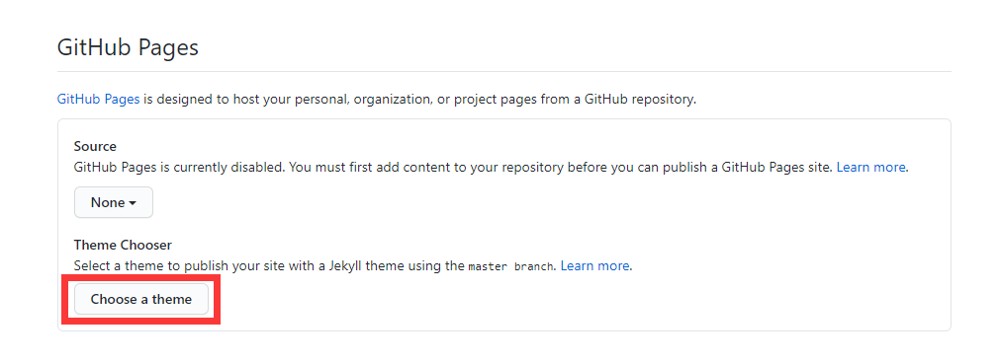
如果后续是打算自己设计制作静态网页的话，这里随便选择一个主题即可，这一步主要是为了验证我们的专属Github Pages域名已经创建成功。点击右上角的“Select theme”。
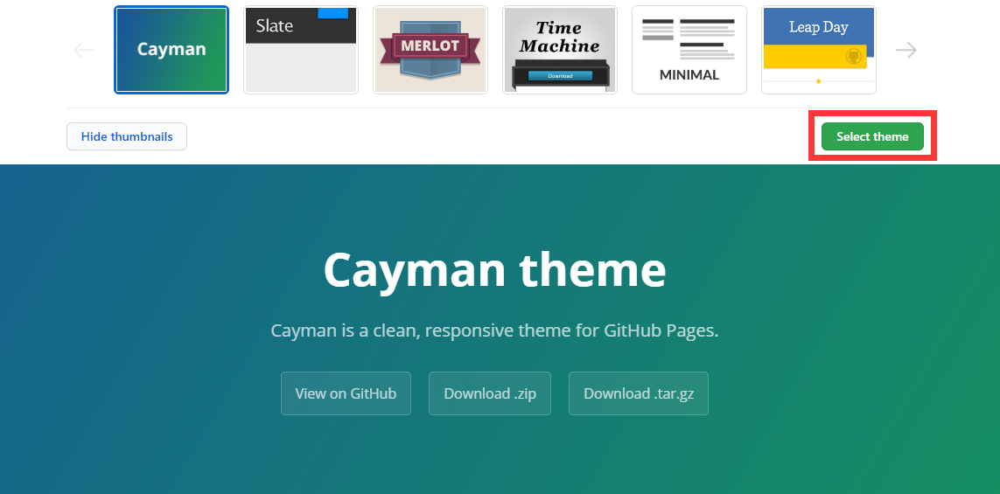
此时，我们的个人博客就创建完成同时拥有了自己所选择的自带的主题内容了。由于不同主题或版本可能有不同的命名规则，我们直接回到“Settings”中的“GitHub Pages”部分查看我们的域名。
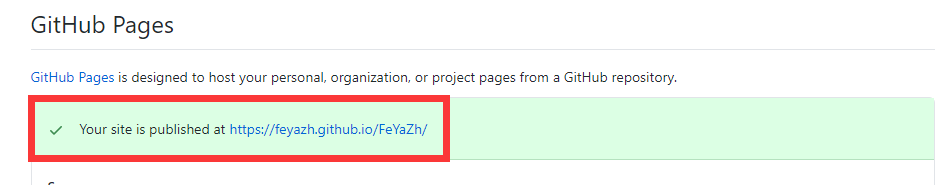
访问我们的个人域名，网页呈现出相关内容。GitHub Pages项目创建成功。
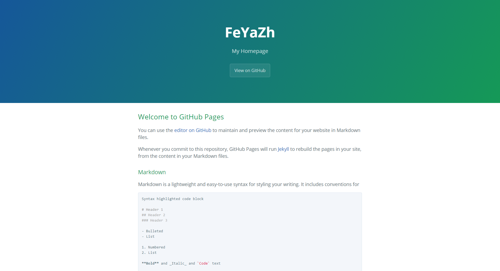
3.安装配置Git
Git是一个开源的非常强大的分布式版本控制系统，在本次任务中它能很好地帮助我们处理项目文件和将其同步到GitHub上。Git下载地址。请自行选择对应的操作系统。
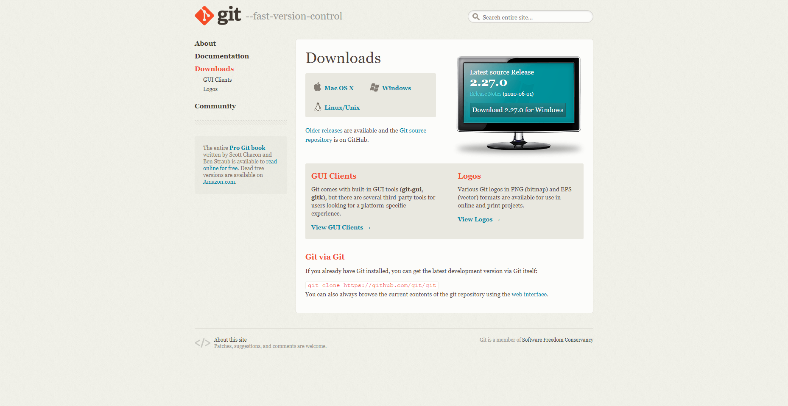
下载安装完成后，我们可以打开命令行输入git --version查看版本号以验证是否安装成功。
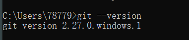
安装成功后，下一步开始Git的相关配置。通过搜索或右键桌面打开Git Bash并输入以下指令。
git config --global user.name "你的GitHub用户名"
git config --global user.email "你的GitHub邮箱"
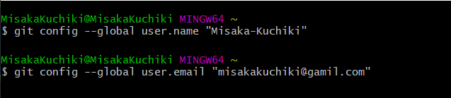
输入以下指令以生成ssh秘钥文件，有了这个秘钥才能完全建立同时安全保障本地与服务器之间的数据传输。
ssh-keygen -t rsa -C "你的GitHub邮箱"
然后连续键入三次回车，即可生成专属自己的秘钥文件。打开自己的用户目录（不知道的可以查看Git Bash上方显示的用户目录路径），找到.ssh文件夹，将其中的id_rsa.pub文件中的内容全部复制（可选用记事本打开方式直接打开）。
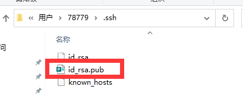
返回GitHub的个人主页，在Settings中找到SSH and GPG keys，点击右上角的New SSH key，将秘钥粘贴至Key框中，Title框随意，最后点击Add SSH key添加。
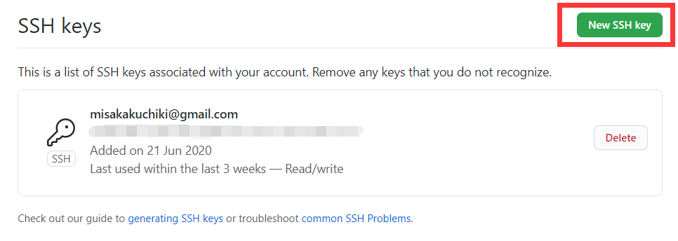
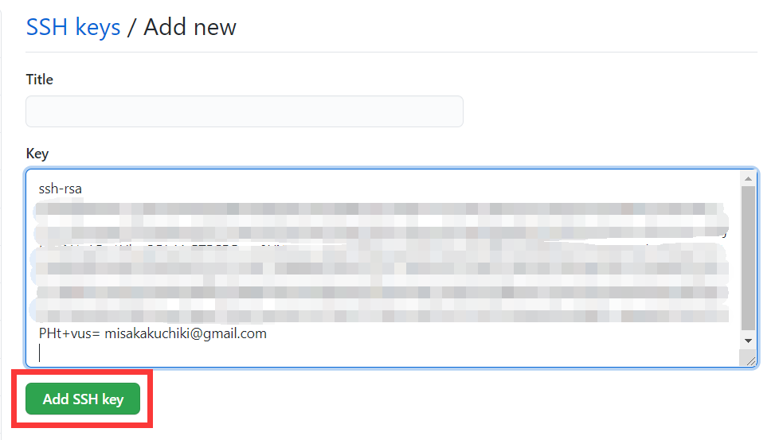
接下来验证秘钥是否配置成功。还是在Git Bash中，输入以下指令。
ssh -T git@github.com
稍作等待后，若出现Hi "你的用户名"! You've successfully authenticated, but GitHub does not provide shell access.，则说明配置成功。
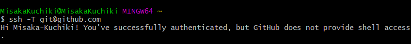
至此，Git的安装配置工作完成。
4.安装配置Hexo
Hexo是一个基于Node.js的静态网站生成器，提供大量的博客网页模板，同时部署方便简易，非常适合想制作个人主页但又不想折腾前端的懒人。首先我们需要做一些准备工作，下载安装Hexo需要的环境。Node.js下载地址。同样根据自身情况下载对应版本。
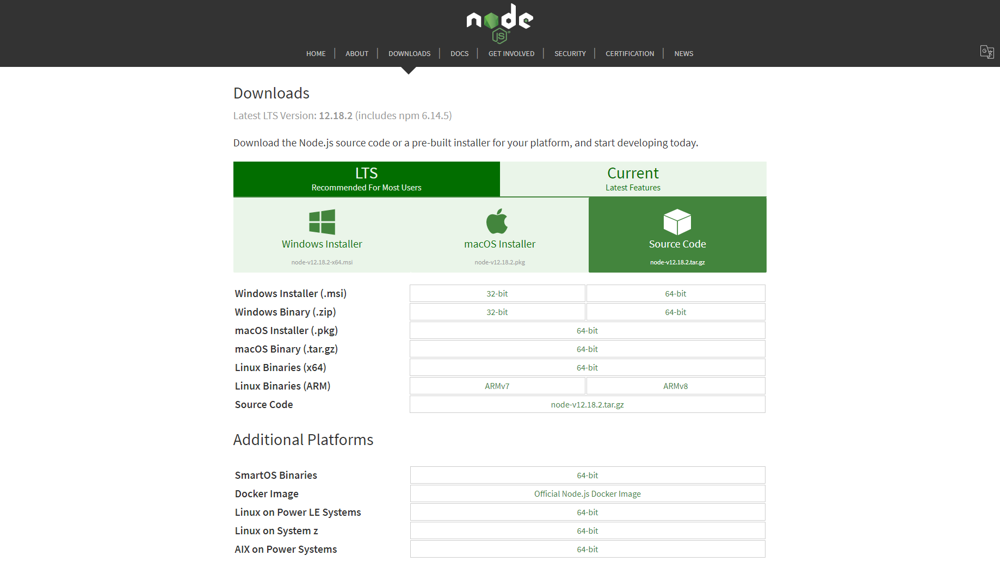
安装完后同样在命令行中分别输入node -v和npm -v来查看node和npm的版本号以验证其是否成功安装。
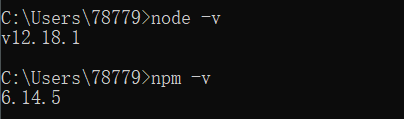
接下来开始Hexo的安装。选择自己合适的磁盘创建一个新的文件夹，Hexo的框架和未来你自己需要发布的网页相关文件都将存储在这个文件夹中。在该文件夹下右键，选择Git Bash Here。新文件夹为空，因为我已经安装过所以有相关文件。
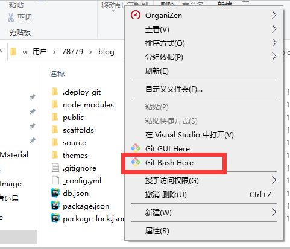
然后输入以下指令来安装Hexo和将本地Hexo部署到GitHub仓库上的工具。两者的安装过程可能会花费一些时间，请耐心等待。
npm install hexo-cli -g
npm install hexo-deployer-git --save
若出现以下界面则说明安装成功。因为我已经安装过，所以所需的时间和文件较少，请以自己电脑情况为标准。deployer安装时提示的warn信息无伤大雅不影响实际使用。
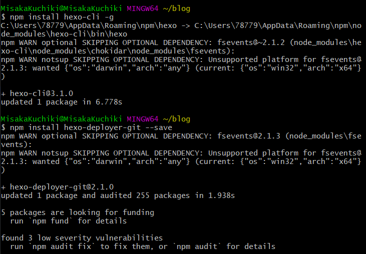
然后输入以下指令初始化Hexo。
hexo init
初始化完成后执行以下指令。
hexo g
hexo s
如图所示即成功。
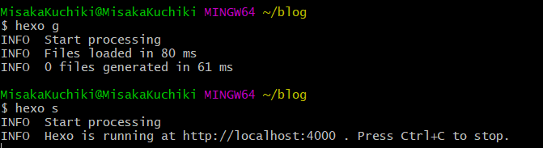
接下来按照指示，在网页地址栏中输入http://localhost:4000/，即可看到我们的网页效果了。
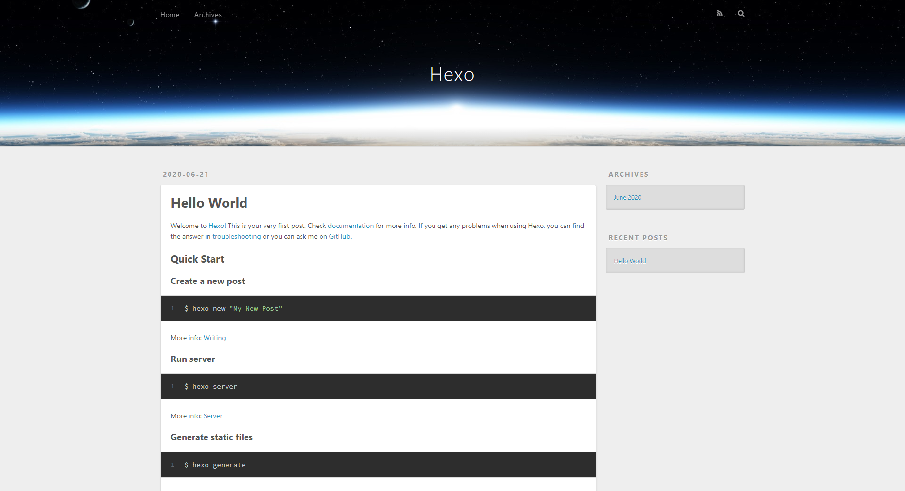
5.部署至GitHub Pages
经过上述操作后，我们的博客主页还只是本地文件，只能自己在自己的电脑上看到。接下来我们需要将其上传让其他人也能看到。
回到GitHub该主页项目的仓库，点击右上角的Code，然后一键复制自己的仓库地址。
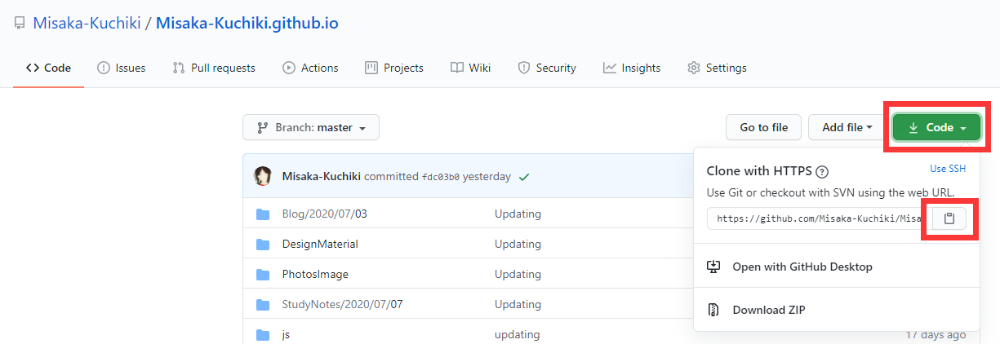
在之前本地新建的博客项目文件夹下找到_config.yml文件，选择合适的编译器将其以可编辑模式打开，找到Deployment字段（应该在最底部），将repo部分的内容替换为刚刚复制的仓库地址。注意冒号后面保留一位空格。
# Deployment
## Docs: https://hexo.io/docs/deployment.html
deploy:
type: git
repo: "替换部分" e.g. https://github.com/Misaka-Kuchiki/Misaka-Kuchiki.github.io.git
branch: master
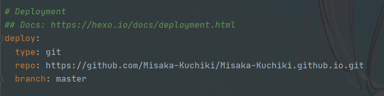
然后在Git Bash中输入：
hexo g -d
如果出现“INFO Deploy done: git”提示信息，则说明部署成功，此时你的博客就以之前的域名展示在互联网上开放浏览了。
但我本人因为想学习前端自行设计制作主页，后续没有使用Hexo作为自己的主页框架，所以一些涉及Hexo新建博客等的指令也不是很熟悉。这里直接推荐几篇有关Hexo指令的文章，以便各位学习。其实大部分配置和命令相关的信息在Hexo的官方文档中都有清楚详细的说明。这位wsmrzx的博客也有针对Hexo从搭建到撰写文章的系列教程，也非常不错。Hexo的指令其实并不复杂繁琐，只要多实践相信一定能熟能生巧并且萌生自己的使用理解。
6.上传自制主页
不知道有没有像我一样的朋友，或觉得Hexo的主题太普通太大众，或想设计专属自己独具一格的主页，又或是求知若渴想学习前端开发知识，不利用Hexo的博客框架而是自己从头编写代码制作网页。那么这些自己编写的网页文件该如何上传部署到GitHub Pages上让别人看到呢。
同样的，我们需要创建好项目仓库并下载安装好Git。选择合适的磁盘创建一个新的文件夹作为我们的本地仓库。返回项目仓库，复制网页地址。
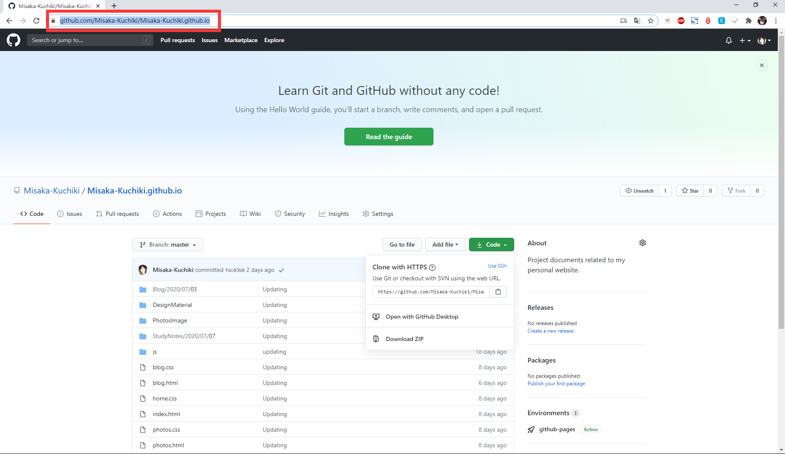
然后打开Git CMD，注意是Git CMD而不是普通的CMD命令提示符或者是Git Bash。
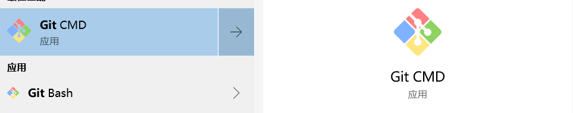
跳转至新建好的本地仓库文件夹，然后输入以下指令：
git clone “你的项目仓库地址” e.g. https://github.com/Misaka-Kuchiki/Misaka-Kuchiki.github.io
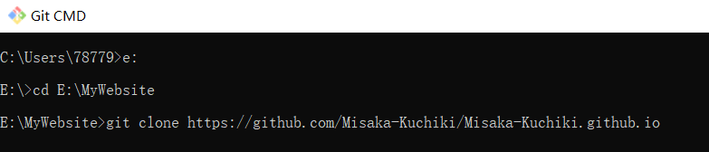
这样我们就得到了一个相同的本地仓库。
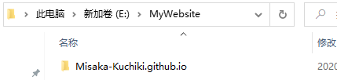
将自己编写的网页和所有关联文件放入该仓库内。注意提前设置检查好路径，以及自己的主页要命名为index.html。
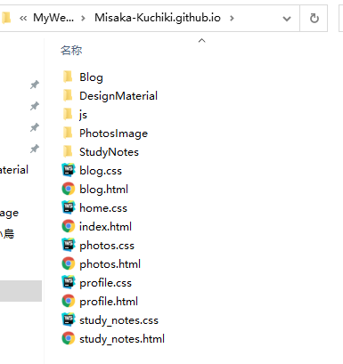
打开Git CMD，跳转至该本地仓库目录下，依次输入以下指令：
git add *
git commit -m "上传说明"
git push